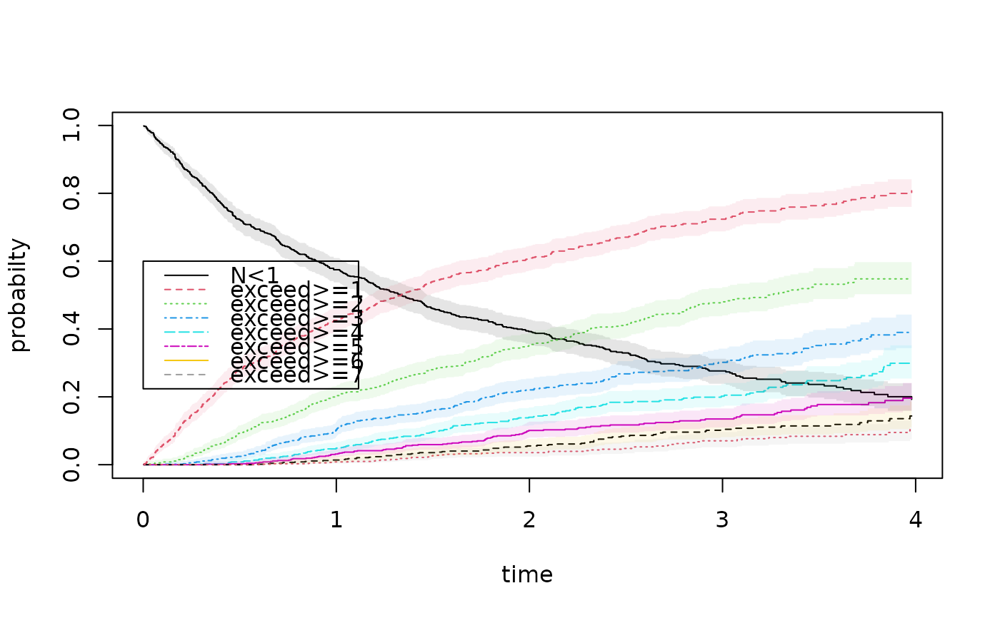

Estimation of probability of more that k events for recurrent events process
Source:R/recurrent.marginal.R
prob.exceed.recurrent.RdEstimation of probability of more that k events for recurrent events process where there is terminal event, based on this also estimate of variance of recurrent events. The estimator is based on cumulative incidence of exceeding "k" events. In contrast the probability of exceeding k events can also be computed as a counting process integral, and this is implemented in prob.exceedRecurrent
prob.exceed.recurrent(
data,
type,
status = "status",
death = "death",
start = "start",
stop = "stop",
id = "id",
times = NULL,
exceed = NULL,
cifmets = TRUE,
strata = NULL,
all.cifs = FALSE,
...
)Arguments
- data
data-frame
- type
type of evnent (code) related to status
- status
name of status
- death
name of death indicator
- start
start stop call of Hist() of prodlim
- stop
start stop call of Hist() of prodlim
- id
id
- times
time at which to get probabilites P(N1(t) >= n)
- exceed
n's for which which to compute probabilites P(N1(t) >= n)
- cifmets
if true uses cif of mets package rather than prodlim
- strata
to stratify according to variable, only for cifmets=TRUE, when strata is given then only consider the output in the all.cifs
- all.cifs
if true then returns list of all fitted objects in cif.exceed
- ...
Additional arguments to lower level funtions
References
Scheike, Eriksson, Tribler (2019) The mean, variance and correlation for bivariate recurrent events with a terminal event, JRSS-C
Examples
########################################
## getting some rates to mimick
########################################
data(base1cumhaz)
data(base4cumhaz)
data(drcumhaz)
dr <- drcumhaz
base1 <- base1cumhaz
base4 <- base4cumhaz
cor.mat <- corM <- rbind(c(1.0, 0.6, 0.9), c(0.6, 1.0, 0.5), c(0.9, 0.5, 1.0))
rr <- simRecurrentII(1000,base4,cumhaz2=base4,death.cumhaz=dr,cens=2/5000)
rr <- count.history(rr)
dtable(rr,~death+status)
#>
#> status 0 1 2
#> death
#> 0 378 177 224
#> 1 622 0 0
oo <- prob.exceedRecurrent(rr,1)
bplot(oo)

par(mfrow=c(1,2))
with(oo,plot(time,mu,col=2,type="l"))
###
with(oo,plot(time,varN,type="l"))
 ### Bivariate probability of exceeding
oo <- prob.exceedBiRecurrent(rr,1,2,exceed1=c(1,5),exceed2=c(1,2))
with(oo, matplot(time,pe1e2,type="s"))
nc <- ncol(oo$pe1e2)
legend("topleft",legend=colnames(oo$pe1e2),lty=1:nc,col=1:nc)
# \donttest{
### do not test to avoid dependence on prodlim
### now estimation based on cumualative incidence, but do not test to avoid dependence on prodlim
### library(prodlim)
pp <- prob.exceed.recurrent(rr,1,status="status",death="death",start="entry",stop="time",id="id")
with(pp, matplot(times,prob,type="s"))
###
with(pp, matlines(times,se.lower,type="s"))
with(pp, matlines(times,se.upper,type="s"))
### Bivariate probability of exceeding
oo <- prob.exceedBiRecurrent(rr,1,2,exceed1=c(1,5),exceed2=c(1,2))
with(oo, matplot(time,pe1e2,type="s"))
nc <- ncol(oo$pe1e2)
legend("topleft",legend=colnames(oo$pe1e2),lty=1:nc,col=1:nc)
# \donttest{
### do not test to avoid dependence on prodlim
### now estimation based on cumualative incidence, but do not test to avoid dependence on prodlim
### library(prodlim)
pp <- prob.exceed.recurrent(rr,1,status="status",death="death",start="entry",stop="time",id="id")
with(pp, matplot(times,prob,type="s"))
###
with(pp, matlines(times,se.lower,type="s"))
with(pp, matlines(times,se.upper,type="s"))
 # }
# }